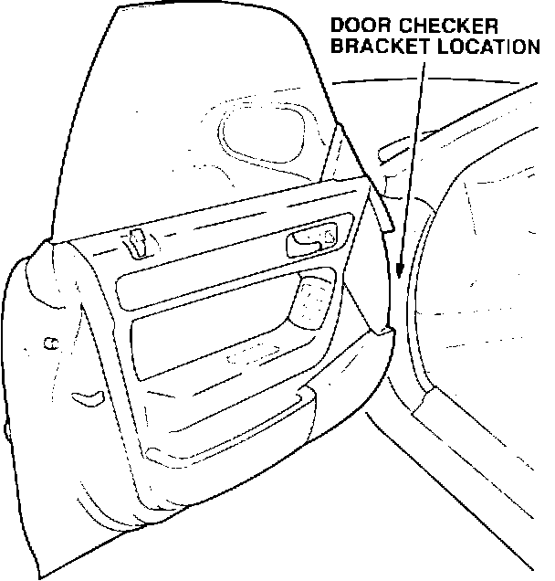
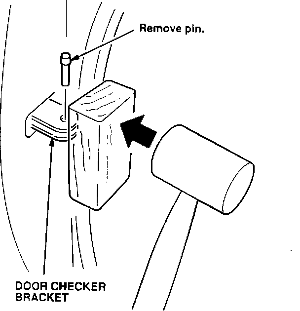

Squeaks At the Door
Symptom:Creaking from the door when the car accelerates or decelerates.
Probable Cause:
Interference between the body and the door checker bracket.
Corrective Action:

1. Remove the pin from the door checker bracket, and open the door fully.

2. Protect the door checker bracket with a block of wood; then hit the wood with a hammer to apply pressure to the bracket.
3. Check for interference and, if necessary, repeat step 2 until the noise is silenced.
4. Apply lithium grease to the area.
5. Replace the pin in the door checker bracket, and test the door for quiet operation
WARRANTY CLAIM INFORMATION
Operation number:
818000
Flat rate time:
0.1 hour
Failed P/N:
72340-SLS-003
Defect code:
042
Contention code:
B07